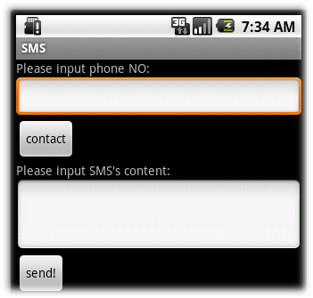
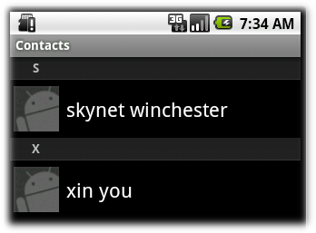
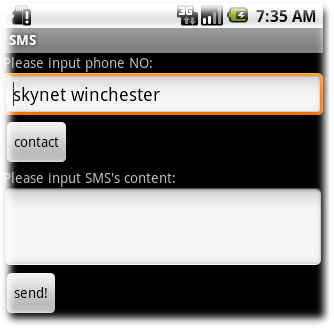

Intents和Intent Filters（实例部分）
引言
上篇我们介绍了Intents和Intent Filters的理论部分，主要是介绍了：activities、services、broadcast receivers三种组件的Intent机制两种Intent（显式和隐式）及它们如何去匹配目的组件、Intent对象包含哪些信息、Intent Filters的action & category & data。
Intent的重要性，我不再着重介绍了，但我还是要说：Intent能够使应用程序突破沙盒与外界交流，者这使得Android的世界变得丰富多彩！本篇将用实例来介绍，如何应用Intent，而且继续用SMS方面的例子来阐述。本文的主要内容如下：
例子（需求）描述STEP1、添加用于显示通讯录的布局文件
STEP2、添加Button的点击事件
STEP3、添加通讯录活动
STEP4、解析通讯录返回的数据
STEP5、在清单文件AndroidManifest.xml中注册通讯录活动和读取Contact数据库的权限
总结
例子（需求）描述
用手机发过SMS的人都知道：
用户可以先编辑短信，然后再去通讯录中选择相应的人并发生给他。
用户可以在短信内容中插入通讯录中联系人的号码。
我们的这个例子就是要说明如何实现这个功能。要实现这个功能，即是创建一个新的Activity选择（ACTION_PICK）通讯录中的数据，它会显示通讯录中的所有联系人并让用户选择，然后关闭并返回一个联系人的URI给短信程序。下面介绍如何一步一步实现类似的功能，而且是在之前Android 开发之旅：短信的收发及在android模拟器之间实践（一）中发送SMS的例子（TextMessage）基础上加上从通讯录中选择联系人的功能。
STEP1、添加用于显示通讯录的布局文件
我们用一个ListView来显示整个通讯录，其中用TextView显示每一记录。它们的xml文件分别为contact.xml、listitemlayout，如下所示：
contact.xml
<?xml version="1.0" encoding="utf-8"?><LinearLayout xmlns:android="http://schemas.android.com/apk/res/android
android:orientation="vertical
android:layout_width="fill_parent
android:layout_height="fill_parent" >
<ListView android:id="@+id/contactListView
android:layout_width="fill_parent
android:layout_height="wrap_content" />
</LinearLayout>
listitemlayout
<?xml version="1.0" encoding="utf-8"?><LinearLayout xmlns:android="http://schemas.android.com/apk/res/android
android:orientation="vertical" android:layout_width="fill_parent
android:layout_height="fill_parent">
<TextView android:id="@+id/itemTextView" android:layout_width="wrap_content
android:layout_height="wrap_content" android:padding="10px
android:textSize="16px" android:textColor="FFF" />
</LinearLayout>
为了能够打开通讯录，我们还需要在TextMessage程序中加入一个Button btnContact，通过点击btnContact激活显示通讯录的活动。这只需在main.xml文件中加入如下代码：
<Button android:layout_width="wrap_contentandroid:layout_height="wrap_content"
android:text="@string/btnContact
android:id="@+id/btnContact
/>
记得还有在values/strings.xml中相应的加入<string name="btnContact">contact</string>。
STEP2、添加Button的点击事件
在上面准备工作做完之后，我们需要监听btnContact的点击事件，当用户点击btnContact时，跳转显示通讯录界面，当用户选择一个联系人之后，返回SMS程序的主界面。这里就要用到了伟大的Intent啦！
btnContact = (Button) findViewById(R.id.btnContact);btnContact.setOnClickListener(new View.OnClickListener() {
@Override
public void onClick(View v) {
Intent intent = new Intent(Intent.ACTION_PICK,
ContactsContract.Contacts.CONTENT_URI);
startActivityForResult(intent, PICK_CONTACT);
}
});
STEP3、添加通讯录活动
添加一个类文件，类名为ContactPick（表示通讯录活动名）继承Activity。它的主要功能就是获取从SMS主程序传递来的Intent并提取数据；然后去查询通讯录数据库，取出数据并填充到STEP1中定义的ListView；最后，还需要添加当用户选择一个联系人的事件onItemClick，将结果返回给SMS主程序，这里也用到了我们伟大的Intent啦！代码如下：
import android.R;import android.app.Activity;
import android.content.Intent;
import android.database.Cursor;
import android.net.Uri;
import android.os.Bundle;
import android.provider.ContactsContract;
import android.view.View;
import android.widget.AdapterView;
import android.widget.AdapterView.OnItemClickListener;
import android.widget.ListView;
import android.widget.SimpleCursorAdapter;
public class ContactPick extends Activity {
/** Called when the activity is first created. */
@Override
public void onCreate(Bundle savedInstanceState) {
super.onCreate(savedInstanceState);
setContentView(R.layout.main);
Intent orgIntent = getIntent();
Uri queryUri = orgIntent.getData();
final Cursor c = managedQuery(queryUri,
null,
null,
null,
null);
String[] fromColumns = new String[] { ContactsContract.Contacts.DISPLAY_NAME };
int[] toLayoutIDs = new int[] { R.id.itemTextView };
SimpleCursorAdapter adapter = new SimpleCursorAdapter(this,
R.layout.listitemlayout, c, fromColumns, toLayoutIDs);
ListView lv = (ListView) findViewById(R.id.contactListView);
lv.setAdapter(adapter);
lv.setOnItemClickListener(new OnItemClickListener() {
@Override
public void onItemClick(AdapterView<?> parent, View view, int pos,
long id) {
c.moveToPosition(pos);
int rowId = c.getInt(c
.getColumnIndexOrThrow(ContactsContract.Contacts._ID));
Uri outURI = Uri.parse(ContactsContract.Contacts.CONTENT_URI
.toString() + rowId);
Intent outData = new Intent();
outData.setData(outURI);
setResult(Activity.RESULT_OK, outData);
finish();
}
});
}
}
STEP4、解析通讯录返回的数据
从通讯录活动返回之后，我们从返回的Intent中提取数据并填充到填写电话号码的EditView中。代码主要如下：
@Overridepublic void onActivityResult(int reqCode, int resCode, Intent data) {
super.onActivityResult(reqCode, resCode, data);
switch (reqCode) {
case (PICK_CONTACT): {
if (resCode == Activity.RESULT_OK) {
String name;
Uri contactData = data.getData();
Cursor c = managedQuery(contactData, null, null, null, null);
c.moveToFirst();
name = c.getString(c
.getColumnIndex(ContactsContract.Contacts.DISPLAY_NAME));
TextView tv;
tv = (TextView) findViewById(R.id.edtPhoneNo);
tv.setText(name);
}
break;
}
}
}
STEP5、在清单文件AndroidManifest.xml中注册通讯录活动和读取Contact数据库的权限
主要工作基本做完了，现在我们只需要注册通讯录活动和读取Contact数据的权限了。完整的清单文件代码如下：
<?xml version="1.0" encoding="utf-8"?><manifest xmlns:android="http://schemas.android.com/apk/res/android
package="skynet.com.cnblogs.www" android:versionCode="1
android:versionName="1.0">
<application>
<activity android:name=".TextMessage" android:label="@string/app_name">
<intent-filter>
<action android:name="android.intent.action.MAIN" />
<category android:name="android.intent.category.LAUNCHER" />
</intent-filter>
</activity>
<activity android:name=".ContactPick" android:label="@string/app_name">
<action android:name="android.intent.action.PICK" />
<category android:name="android.intent.category.DEFAULT" />
</activity>
</application>
<uses-permission android:name="android.permission.SEND_SMS" />
<uses-permission android:name="android.permission.READ_CONTACTS" />
</manifest>
注意通讯录活动的Intent Filters，它的action是android.intent.action.PICK；category是android.intent.category.DEFAULT。现在我们分析一下这个Intent Filter：
<action android:name="android.intent.action.PICK" />：使用户能够可以在通讯录列表中选择一个，然后将选择的联系人的 URL返回给调用者。
<category android:name="android.intent.category.DEFAULT" />：这是默认的category，如果不知道category系统会自动加上。这个属性是让使其能够被像Context.startActivity()等找到。要说明的的是，如果列举了多个category，这个活动仅会去处理那些Intent中都包含了所有列举的category的组件。
我们还可以在清单文件中看到TextMessage活动的Intent Filter：
<intent-filter><action android:name="android.intent.action.MAIN" />
<category android:name="android.intent.category.LAUNCHER" />
</intent-filter>
它指TextMessage活动定是真个程序的入口并且TextMessage会列举在Launcher即启动列表中。
程序运行结果如下图所示：

图1、主界面

图2、点击contact按钮之后

图3、选择一个联系人之后
总结
我们用发短信中选择联系人的例子说明Intent和Intent Filter，这里体现了两个活动之间如何通过Intent和Intent Filter来交互，这也是我们在编写Android应用程序的时候经常遇到了。本文除了上述的主要内容之外，还涉及别的知识点，下面列举几个个人认为比较有用的知识点：
1) Cursor类它跟我们平时用的数据库中的游标类似，它提供了对从数据库返回的结果的随机读写操作。如我们例子中用到的，通过managedQuery方法 查询数据库并返回结果，然后利用Cursor对它进行操作。下面介绍Cursor类的几个方法（我们例子中用到的，更多的方法请自行查阅相关资料）：
2) public abstract int getColumnIndexOrThrow (String columnName)：返回给定列名的索引（注意：从0开始的），或者当列名不存在时抛出llegalArgumentException异常；
3) public abstract boolean moveToFirst ()：移动到第一行。如果Cursor为空，则返回FALSE
4) public abstract boolean moveToPosition (int position)：将游标移动到一个指定的位置，它的范围在-1 <= position <= count。如果position位置不可达，返回FALSE
5) managedQuery方法：根据指定的URI路径信息返回包含特定数据的Cursor对象，应用这个方法可以使Activity接管返回数据对象的生命周期。参数：
6) URI: Content Provider 需要返回的资源索引
7) Projection: 用于标识有哪些columns需要包含在返回数据中
8) Selection: 作为查询符合条件的过滤参数，类似于SQL语句中Where之后的条件判断
9) SelectionArgs: 同上
10) SortOrder: 用于对返回信息进行排序
SimpleCursorAdapter允许你绑定一个游标的列到ListView上，并使用自定义的layout显示每个项目。SimpleCursorAdapter的创建，需要传入当前的上下文、一个layout资源，一个游标和两个数组：一个包含使用的列的名字，另一个（相同大小）数组包含View中的资源ID，用于显示相应列的数据值。